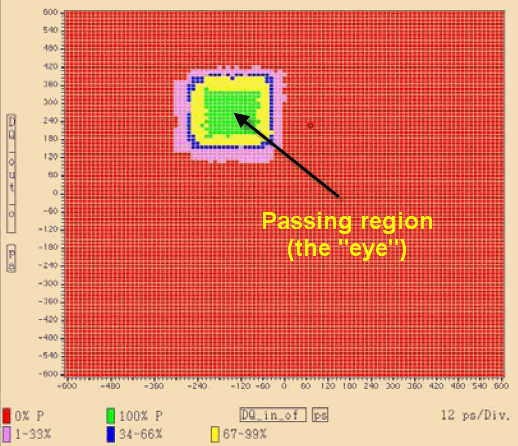
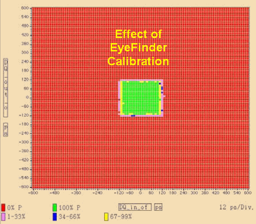
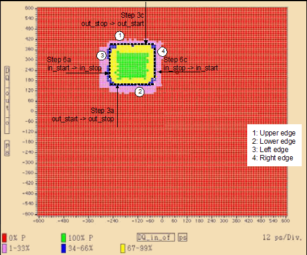

EyeFinder theory of operation
The high-speed DQ bus of an XDR memory device shows some remaining timing/skew, that is, the timing of input and output edges varies from pin to pin, because of the different line length within the device without any timing correction/compensation. Both write and read operations on the DQ bus are therefore unreliable. In actual applications, a separate memory-controller device compensates for this problem (using a process known as FlexPhase adjustment). During testing of the memory device, the test system itself must compensate for this problem using the EyeFinder.
The test system compensates for timing skew by means of a calibration process which (1) collects timing data on the DUT input and output pins, and (2) makes compensating adjustments to the timing of the test system's drive and receive edges. The EyeFinder test method performs this calibration. The calibration is DUT-specific; it must be performed each time another device is loaded for testing.
The term "eye" refers to the passing region of a pass/fail Shmoo plot. In the plot, the drive-edge timing varies along the X axis and the receive-edge timing varies along the Y axis. Somewhere in the plot will be a region (known as the eye) in which the DUT consistently passes. In the example plot below, the bright green region (representing a 100% passing rate) is the eye. The X/Y coordinates of the center of the eye represent the best possible timing offsets for the drive and receive edges. Note that the eye (where the test is passing) is not centered at or near (0,0), but the test is initially performed at the test point (0,0). Therefore, if the DUT is tested with no timing adjustments for the drive and receive edges, it would never pass:

The EyeFinder collects pass/fail data for different X/Y values, identifies the X/Y coordinates for the center of the eye, and downloads these values as edge-timing offsets to the system hardware, so that they can be applied during subsequent testing of the DUT.
Place an EyeFinder test suite at the start of the test flow, so that a calibration is run on each new DUT; the appropriate timing offsets will be applied during the rest of the test flow.
The effect of the calibration is illustrated by the Shmoo plot below; the passing region is now centered on (0,0) and has cleaner edges, because the calibration is correcting for skew effects:

The calibration process

The EyeFinder calibrates first the output and then the input, as described below.
- Output calibration: First, the EyeFinder measures the pin-to-pin timing variations of
the DUT outputs using the output pins as both setup and result pins.
To do so, it loads a data sequence from the WDSL pattern specified as the vector label in the EyeFinder test suite (a standard training pattern for XDR devices) into the DUT's memory cells, so that the sequence can then be read on the DUT output pins.
Because the high-speed DQ bus cannot be used reliably for read and write operations until the EyeFinder calibration has been performed, the data sequence is loaded by way of the DUT's low-speed serial bus instead (the timing accuracy of which is not critical).
- The EyeFinder instructs the DUT to send the data sequence (1s and 0s) to its output pins.
- The test system reads the outputs on the DQ bus, varying the timing of the test system
receive edges in order to determine when the 0-to-1 and 1-to-0 transitions are occurring on the
outputs.
The varying of the timing follows this algorithm (see Using EyeFinder for an overview of the available parameters):
- To find the lower edge of the eye, the EyeFinder performs a linear search from out_start to out_stop in steps of out_step ps.
- When the EyeFinder finds a fail-pass transition between two measurements, it performs a binary search between those two to position the edge more precisely. The binary search ends when the search steps have reached the size specified in resolution.
- To find the upper edge, the EyeFinder repeats the same process from out_stop to out_start (that is, in the opposite direction).
- The EyeFinder calculates the vertical center of the eye from the two edges found.
The search and results determination are performed using the EXSR and RSSR? firmware commands; the timing specs are updated from the results using SVLR.
Edge searches and center calculations are performed independently for each pin and the results stored as calibration offsets to the standard timing.
After this process, the DUT output timing is calibrated. The DQ bus can be reliably read from, but it still cannot be reliably written to, because the input side of the DUT is not yet calibrated.
- Input calibration: To calibrate the DUT input, the test system applies the pattern specified in the pattern parameter of the EyeFinder test method, using the input pins as setup pins and the output pins as result pins.
- The EyeFinder instructs the device to send the data pattern that it received to its output pins (which can now be read reliably).
- The test system reads the outputs, varying the timing of the test system drive edges in
order to determine when the transitions are occurring on the inputs.
The varying of the timing follows this algorithm (see Using EyeFinder for an overview of the available parameters):
- To find the left edge of the eye, the EyeFinder performs a linear search from in_start to in_stop in steps of in_step ps.
- When the EyeFinder finds a fail-pass transition between two measurements, it performs a binary search between those two to position the edge more precisely. The binary search ends when the search steps have reached the size specified in resolution.
- To find the right edge, the EyeFinder repeats the same process from in_stop to in_start (that is, in the opposite direction).
- The EyeFinder calculates the horizontal center of the eye from the two edges found.
The search and results determination are performed using the EXSR and RSSR? firmware commands; the timing specs are updated from the results using SVLR.
Edge searches and center calculations are performed independently for each pin and the results stored as calibration offsets to the standard timing.
At this point, the calibration process is completed for both the output and input sides of the DUT, and the test system can write to and read from the DUT's DQ bus reliably.
Optionally, you can specify that the output-side calibration should be repeated at the end (this time with the pattern that was used for the input side calibration), but this option is included only for the sake of backwards-compatibility with previous versions of this test method. It is not necessary to exercise this option, and doing so will not make the calibration more accurate.
The process is performed either in software on the controller workstation or in hardware in the test processor, depending on the setting of the TrainingAlgorithm test method parameter:
- If TrainingAlgorithm is SpecTraining: The process is performed on the workstation.
- If TrainingAlgorithm is EmbeddedTraining: The process is performed on the test processor.
Embedded training requires an HSM3G or HSM6800 card. If you test on one of these cards, we recommend that you use embedded training for improved performance and support for parallel operation.
Functional changes
- Introduced before SmarTest 6.3.2
- MTP 3.0.1: Training can now run embedded on the test processor